bitcoin X fate
페이트의 길가메쉬 vs 에미야 아처 상성 관계로 보는 달러와 비트코인 — 절대강자의 능력이 곧 약점이 되고, 그 약점만 정확히 노린 카운터가 등장하는 이야기.
bitcoin X hunter hunter
헌터x헌터 넨의 '제약과 서약' 법칙과 비트코인의 발행 한도, PoW, 셀프 커스터디를 나란히 놓고 보면 보이는 것들.
소프트포크 & 하드포크
사토시의 1MB 블록 제한부터 최근 소프트포크로 시작했다 결국 하드포크로 갈라선 BIP-110까지, 비트코인이 나뉘는 두 가지 방식을 정리했다.
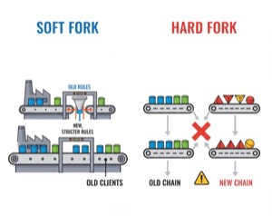
경화 & 연화
세상의 모든 돈이 같은 성질을 가지진 않는다. 공급을 늘릴 수 없는 경화와 마음껏 늘릴 수 있는 연화, 결국 오래 살아남는 건 어느 쪽일까.
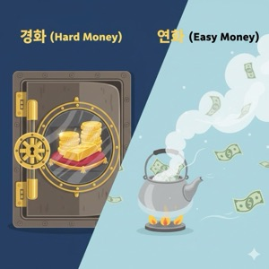
투자인가 저축인가?
법정화폐는 가치의 저장 기능을 못한다. 비트코인은 금 같은 상품이 아니라 돈 그 자체다 — 그래서 투자가 아니라 저축이라는 관점.
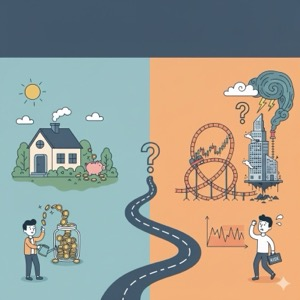
서명용 아이폰(3)
오프라인 카메라가 안 떠서 읽기목록, 홈화면 추가, 브레이브 다 실패하고 결국 엣지로 성공한 좌충우돌기. 에어갭으로 굳히기 전에 먼저 해보길 잘했다.
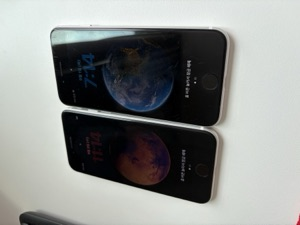
스팩터 피싱사이트 떴다!
공식 계정의 피싱 경고에 심장이 철렁, 체크섬·GPG 서명까지 다 대조해서 정품 확인. 그 와중에 만난 0-conf 미반영 해프닝까지.
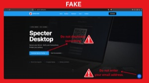
서명용 아이폰(2)
QR 송수신, 파일 암호화/복호화, 잔돈검증기, 콜드월렛까지. 보안 노트북과 짝을 이루는 이중 잠금 휴대용 기기가 됐다.
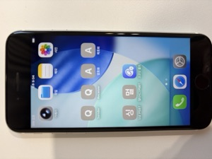
궁극적인 보안은 멀티시그?
서명기기·오픈소스 하드웨어·에어갭 노트북, 셋 다 100% 신뢰할 순 없다. 결국 최종 종착지는 서로 다른 공급망을 섞는 멀티시그.
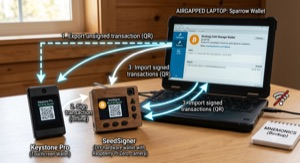
스팩터 DIY 터지나?
호스트가 주는 잔돈 정보를 그대로 믿던 구멍을 막은 PR #387. 잔돈검증기가 왜 필요한지 다시 한번 증명됐다.
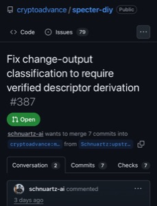
서명용 아이폰(1)
코코넛볼트를 설치하고 오프라인 서명용 아이폰을 만들기 시작했다. 궁극적으론 안테나까지 전부 뜯어낼 계획.
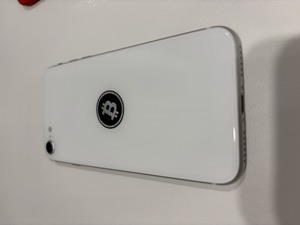
PSBT 잔돈(OUTPUT) 검증기
다크스키피 공격에 대비하려고 만든 도구. 서명된 PSBT의 잔돈 주소가 정말 내 지갑이 맞는지 확인한다.
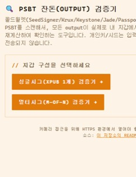
bitcoin full node
풀노드를 굴리는 진짜 이유는 자체 검증. 비트코인 코어 + 스펙터 데스크탑으로 남의 서버 없이 내 눈으로 확인하는 법.
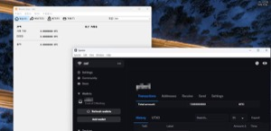
탭사이너 & 새츠카드
콜드카드 Q 사태 이후, 같은 코인카이트 제품이라는 이유만으로 핫월렛보다 못 믿게 되어버린 탭사이너와 새츠카드 이야기.

애증의 COLDCARD Q
누구보다 아끼고 추천하던 기기였는데, 엔트로피 부족 사건으로 신뢰가 무너지기까지의 이야기.